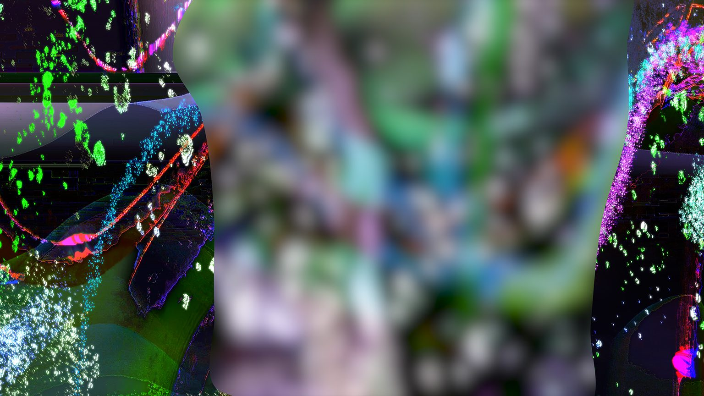
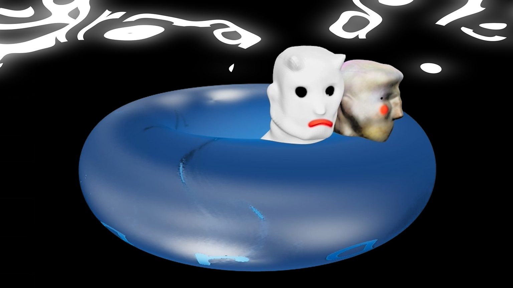
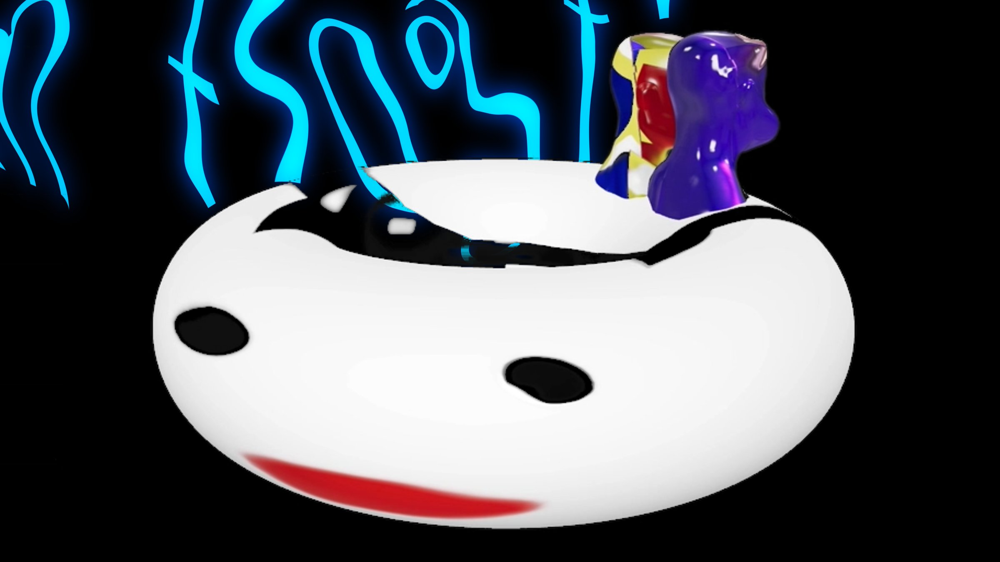
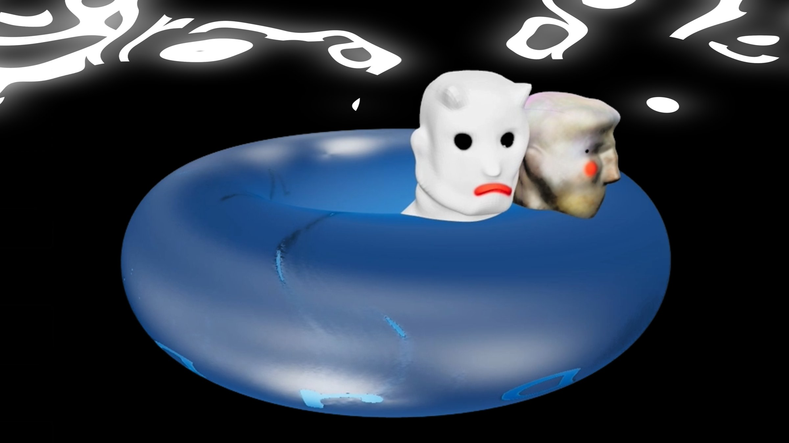
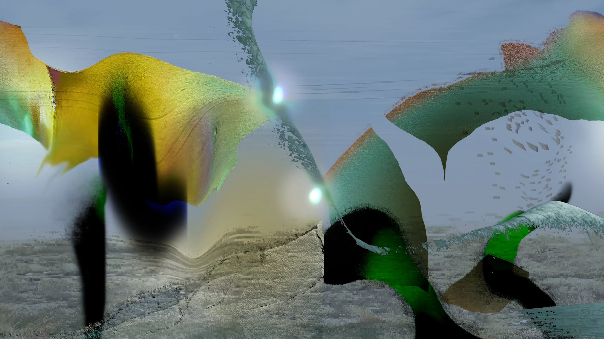

A VR journey through a star-filled canyon to a swimming hole. The experience begins on a float drifting under fireworks, surrounded by scattered artifacts and phenomena: a portal, a pineapple, shifting sounds, something running, spatial energies.
Throughout the thirty-minute trip, visitors are paraded through a hazy world of symbols and strange phenomena. Anomalies appear tied to an evolving soundscape that implies a story, a series of secrets, a transformation. There is an implication that an entity beyond our understanding created these worlds for us to explore. Another civilization that found human relics, who now stand as uncanny objects in a new reality.
Ludy’s work loosens up reality and asks us to consider the world of the invisible. The canyon environment embraces solid forms but veers toward the immaterial and the spiritual: mists, bursts of light, glass refractions, breaks within reality. It is an architecture of feelings, of things we cannot articulate. The balance between real-feeling and artificial is deliberate and shifting—some surfaces break, decay, are purposely fake, exposing the materiality of the digital world itself: its cheap mirages, its unique quirks. The result is a triangulation between reality, digital space, and a dreamy surreality—a hybrid territory that feels like entering a painting for half an hour.


Stills from Sara Ludy’s VR environments. Parts of the journey are slow, meditative. Sit with it, take it in. Other elements provoke a different reaction entirely. The canyon spirals toward an absurd crescendo, a carnivalesque assembling of forms. Through the creation of these synthetic spaces, Ludy brings us into a new kind of spiritual world.


